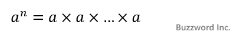
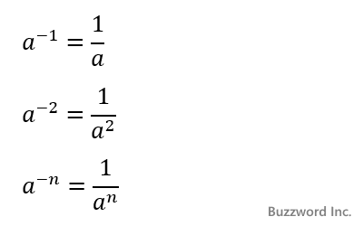
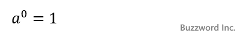
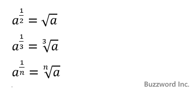

累乗を計算する(Math.pow, Math.exp)
Math オブジェクトの静的メソッドである Math.pow は底と指数を指定し累乗を計算します。また Math.exp は底をネイピア数である e とし、指数を指定して累乗を計算します。ここでは Math オブジェクトの Math.pow メソッドおよび Math.exp メソッドの使い方について解説します。
累乗を計算する(pow)
Math オブジェクトの Math.pow メソッドは底と指数を指定して累乗を計算します。書式は次の通りです。
Math.pow(底, 指数)
引数に指定した底と指数から累乗を計算し結果を返します。引数が数値ではなかった場合は数値に変換してから平方根を計算します。
一般に底を a 指数を n とした場合の a の n 乗は an と記述し次のように a を n 回乗算したものです。

指数が負の値だった場合、次のように表すことができます。

指数が 0 だった場合は底の値に関わらず累乗の結果は 1 となります。

指数が整数ではなかった場合、次のように表すことができます。

※この時底が負の値だと結果が複素数や虚数になる場合があります。その場合は NaN が返されます。
累乗のサンプル
次のサンプルをみてください。
Math.pow(2, 3); >> 8 Math.pow(3, 2); >> 2 Math.pow(-4, 3); >> -64
最初の例は 23 = 2 x 2 x 2 = 8 となります。二番目の例は 32 = 3 x 3 = 9 となります。最後の例は -43 = -4 x -4 x -4 = -64 となります。
指数が負の場合
次は指数が負の値の場合です。
Math.pow(2, -1); >> 0.5 Math.pow(2, -2); >> 0.25 Math.pow(2, -3); >> 0.125
最初の例は 2-1 = 1 / 2 = 0.5 となります。二番目の例は 1 / 22 = 1 / 4 = 0.25 となります。最後の例は 1 / 23 = 1 / 8 = 0.125 となります。
指数が0の場合
次は指数が 0 の場合です。
Math.pow(2, 0); >> 1 Math.pow(5, 0); >> 1 Math.pow(-3, 0); >> 1
指数が ０ の場合は底の値に関わらず結果は 1 となります。
指数が整数でない場合
次は指数が整数でない場合です。
Math.pow(16, 1 / 2); >> 4 Math.pow(27, 1 / 3); >> 3
最初の例 161/2 は 16 の平方根となり 4 となります。二番目の例 271/3 は 27 の立方根となり 3 となります。
指数または底がNaNの場合
底が NaN の場合は指数が 1 以外の時は NaN となります。指数が 0 の場合は 1 となります。指数が NaN の場合はすべて NaN となります。
Math.pow(NaN, 0); >> 1 Math.pow(NaN, 1); >> NaN Math.pow(NaN, 2); >> NaN Math.pow(2, NaN); >> NaN
指数または底が数値ではなかった場合
底または指数が数値でない場合は数値に変換した後で累乗を計算します。
Math.pow([2], 3); >> 1 Math.pow(3, '4'); >> NaN
eの累乗を計算する(exp)
Math オブジェクトの Math.exp メソッドは底を e として指数を指定して累乗を計算します。書式は次の通りです。
Math.exp(指数)
引数に指定した指数から e指数 を計算し結果を返します。引数が数値ではなかった場合は数値に変換してから平方根を計算します。
底の e は自然対数の底であるネイピア数と呼ばれる値で、 Math オブジェクトの静的プロパティとして用意されています。
Math.E 自然対数の底
次のサンプルをみてください。
Math.exp(1); >> 2.718281828459045 Math.exp(2); >> 7.38905609893065 Math.pow(Math.E, 1); >> 2.718281828459045
最初の例は e1 となり、二番目の例は e2 となります。最後の例は Math.pow メソッドを使って同じ演算を行った場合です。
-- --
Math オブジェクトの Math.pow メソッドおよび Math.exp メソッドの使い方について解説しました。
( Written by Tatsuo Ikura )

著者 / TATSUO IKURA
初心者～中級者の方を対象としたプログラミング方法や開発環境の構築の解説を行うサイトの運営を行っています。